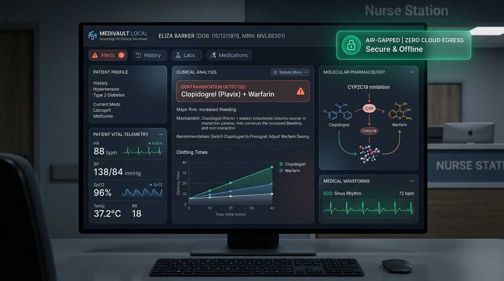

MediVault Local
"The Offline AI Co-Pilot That Stops Fatal Prescription Errors."
Hospitals cannot legally transmit patient records to cloud LLMs like ChatGPT without severe regulatory penalties under HIPAA and the DPDP Act. At the same time, clinical cognitive overload causes dangerous prescription contraindications to slip through fatigued human shifts. MediVault Local executes 100% on the doctor's workstation with zero cloud egress, a deterministic pharmacology safety override, and local SHA-256 Merkle audit proofs.

The Hospital Trilemma: Legal Bans, Tired Doctors & Fatal Drug Mix-ups
An 80-year-old grandfather taking blood pressure and water pills visits the ER with back pain. An exhausted doctor in hour 14 prescribes standard Advil (Ibuprofen).
The result? The three drugs together choke off blood flow to his kidneys. Within 48 hours, his kidneys shut down completely (eGFR plunges from 42 to < 15 mL/min), requiring emergency ICU dialysis.
Hospitals Cannot Use Cloud AI
Sending patient charts to OpenAI or AWS is a severe crime with penalties up to ₹250 Crore / $50,000 per violation. Doctors are locked out of modern AI.
43% of Polypharmacy Patients at Risk
Over 100,000 people die each year from Adverse Drug Events. When patients take 5+ prescriptions across specialists, human memory cannot calculate all dangerous cross-reactions.
Pure LLMs Make Deadly Guesses
Generic LLMs invent plausible-sounding dosages or confidently approve toxic drug mixes due to prompt drift. In medicine, guessing kills.
The 6-Stage Sovereign Pipeline: Airport Security for Prescriptions
Read Document
Scans handwriting or PDF notes on laptop.
PyMuPDF + local RapidOCR (ONNX). Zero cloud vision APIs.
Scrub Identity
Erases patient name & phone into anonymous codes.
18 HIPAA Safe Harbor regex strippers -> ANON_ token.
Decode Drug
Recognizes that "Advil" means "Ibuprofen".
RxNorm brand-to-generic dictionary & allergy cross-reactivity.
Hard Rules
Checks if drug harms kidney, liver, or heart.
SQLite rule matrix: Cockcroft-Gault, Beers 2023, lab cutoffs.
AI Explains
Local AI explains biological danger in plain English.
Rowland & Tozer PK model + Ollama llama3.2:3b SLM.
Wax Seal
Locks decision with proof of zero tampering.
SHA-256 Merkle chain fulfilling HIPAA § 164.312(b).
FastAPI, Python 3.10+, SQLite with WAL (Write-Ahead Logging) concurrency.
Ollama llama3.2:3b running locally. Automatic deterministic fallback.
HL7 FHIR R4 Bundle export, HL7 CDS Hooks standard, Optical SVG QR codes.
Doctor Station with hotkeys (Ctrl+1..6), Patient Portal, Zero external CDNs.
The Deterministic-Override Engine: Eliminating All Hallucinations
A hardcoded SQLite database of medical contraindications, formulas (Cockcroft-Gault Creatinine Clearance), and quantitative lab biomarkers (eGFR < 30, K+ > 5.0, INR > 3.5).
Translates the warning into clear clinical language, explaining the biological mechanism (e.g. prostaglandin inhibition) and suggesting safe formulary alternatives (Linagliptin, Acetaminophen).
Interactive CDSS Prototype Simulator
Ctrl+6 opens judge challenge suite.
Advil stops the production of prostaglandins that keep the kidney's incoming blood vessels open. In a patient with Stage 3 kidney disease, blood flow drops to critical levels within hours, risking acute tubular necrosis.
The Secret Weapons: Optical QR & Merkle Audit Ledger
Local Merkle Audit Ledger (No Cloud Needed)
Satisfies HIPAA Security Rule § 164.312(b) with mathematical tamper-proofing.
Optical Air-Gap QR Transfer
Zero Cables / Zero RadiosHow to share records safely? USB drives bring malware, and Wi-Fi can be hacked. We compress entire medical clearance bundles (Base64 + zlib) into high-density dynamic SVG QR codes scanned camera-to-screen.
Four Critical Battles: What Broke & How We Fixed It
What Broke: The local model (llama3.2:3b) occasionally cleared dangerous drug combos when given noisy or polite user prompts.
What Broke: Real clinic prescriptions are crumpled paper slips. Cloud OCR (Google Vision, AWS Textract) violates HIPAA's zero-cloud mandate.
What Broke: When 6 doctors entered orders at once on a hospital workstation, SQLite crashed with database is locked errors.
What Broke: Transferring medical discharge clearances between air-gapped workstations without allowing USB thumb drives (malware risk).
Judging Scorecard: 100% Target Met Across All Criteria
Technical Execution
- 117 automated tests passing.
- Rowland & Tozer PK model.
- SQLite WAL (0 database locks).
- Loopback assertion tests.
Innovation
- Deterministic SLM override.
- Optical SVG QR air-gap transfer without RF radios.
- Local Merkle hash ledger.
- On-device RapidOCR.
Clinical Impact
- Stops fatal polypharmacy errors (Triple Whammy).
- Enables AI for hospitals legally barred from cloud.
- Zero software licensing fees for rural clinics.
Product Experience
- Physician station with hotkeys (
Ctrl+1..6). - Plain-English Patient Portal for lab translation.
- Printable clearance certificate with QR seal.
Completeness
- 1-click
run_demo.batlauncher. - Interactive Judge Crisis Suite (
Ctrl+6). - Comprehensive docs & QA checklist.
True Sovereignty is Clinical Reliability
Team Void_coders Division of Labor
Post-Hackathon Production Roadmap
On-Premises Hospital EHR Connectors: Direct offline HL7 v2 and FHIR subscription adapters for Cerner, Epic, and open-source OpenMRS.
Pharmacogenomics (PGx) Integration: Cross-referencing patient CYP2D6 and CYP2C19 gene metabolizer types to prevent personalized toxicities.
Edge Hardware Triage Box: Packaging MediVault Local onto ruggedized Raspberry Pi 5 / NVIDIA Jetson units for military field hospitals and rural clinics.
True Sovereign AI isn't just about privacy—it's about clinical reliability when the world is completely offline.